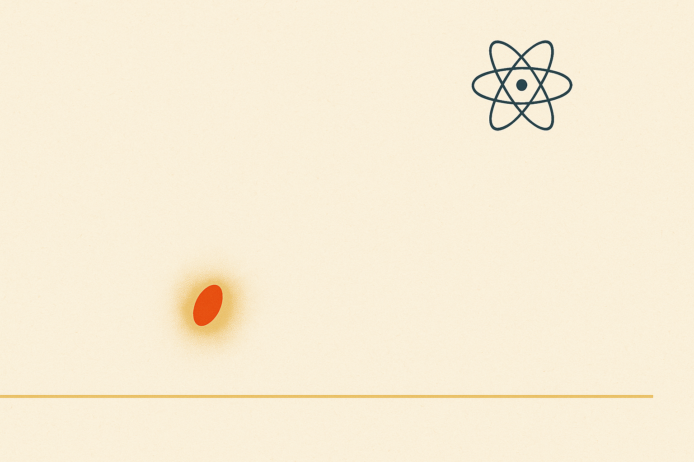

The science of generating serendipity.
Volume I is the thesis. Volume II is the instrument.

Ten parts on luck, waves, archetypes, and the moats that hold them. The argument before the apparatus.

Frames, places, waitlists, alphas, betas, gates, and the daily clockspeed that compounds them.
⁂ Frontispiece — Contents ⁂
- Part I The Frame: Farming Luck p. 003
- Part II The Place: Where the Apparatus Lives p. 027
- Part III The Waitlist: A Door Worth Standing At p. 052
- Part IV The Alpha: First Light p. 081
- Part V The Beta: Pressure-Testing the Gate p. 109
The Frame:
Farming Luck
Luck looks unrepeatable from the outside and farmable from the inside. The collector who happened to walk past the right card-shop window, the founder who happened to ship the right feature on the right Tuesday — both stories read like fortune. They are not. Underneath every single one is an apparatus: a posture, a place, a clockspeed, a set of standing invitations to be surprised. The thesis of Volume I told you this can exist. This volume builds it.
What follows is the operator's manual for that apparatus. We will not philosophize about luck. We will measure it, gate it, instrument it, and ship it to a small group of people whose feedback is worth more than every dashboard you have ever loved. Volume II is not theory. It is shop-floor.
Sidenote 1
"Apparatus" is a deliberate word — Vesalius used it for his anatomical plates, Tufte for his small multiples. We owe the lineage.
The frame is the first move.Before any tool, before any roadmap, before any single line of code, the operator chooses what counts as a hit and what counts as noise.1 Frames are cheap to write and expensive to fix mid-flight. So write them carefully, and write them down. The frame is the contract you make with yourself about which surprises you intend to honor.
You don't make lightning. You build the apparatus that catches it when it strikes.
A good frame has three properties. It is narrow enough to falsify — so a single week of data can tell you the truth. It is wide enough to surprise — so a real signal isn't dismissed as scope creep. And it is cheap enough to repeat — so the operator can run twelve frames in a quarter, not two.
Sidenote 2
The Sean Ellis "very disappointed" question survives because it is unfakeable. Pricing flinches. Retention curves bend. The PMF question stays.
Promotion gates, defined
Every alpha lives behind a gate. Every gate is a fixed list of metrics with fixed thresholds and a fixed source-of-truth. The list is short. The thresholds are written before the cohort opens.2 The source is named. If those three things are not on paper before you ship, you are not running an alpha — you are running on vibes.

Below is a representative gate sheet. The numbers are illustrative — your apparatus will have its own — but the shape generalizes. Five metrics, three thresholds, one named source per row. No essay. No appendix. This is the table that decides whether the alpha graduates.
| Metric | Alpha exit | Beta exit | GA | Source |
|---|---|---|---|---|
| D7 retention | ≥ 35% | ≥ 45% | ≥ 50% | Heimdall · cohort |
| Activation rate | ≥ 60% | ≥ 70% | ≥ 78% | Mixpanel · funnel |
| Support tickets / 100 DAU | ≤ 8.0 | ≤ 4.0 | ≤ 2.0 | Intercom · weekly |
| NPS (top-2 box) | ≥ 40 | ≥ 50 | ≥ 55 | In-app survey |
| Sean Ellis PMF | ≥ 30% | ≥ 40% | ≥ 50% | Quarterly panel |
The gate is not a wish. It is a function — input cohort, output verdict. The operator's job is to make that function legible to a stranger reading the manuscript a year from now. The clearest implementation is a few lines of code:
# promotion_gate.py — alpha → beta promotion def promote(cohort): metrics = heimdall.snapshot(cohort, window="7d") return all([ metrics.d7_retention >= 0.35, metrics.activation_rate >= 0.60, metrics.tickets_per_100 <= 8.0, metrics.nps_top2 >= 40, metrics.sean_ellis_pmf >= 0.30, ])
That is the apparatus, in nine lines. Everything else in this chapter — the rituals, the room, the ratios — exists to keep that function honest. Now: what does it take to earn an honest input?
- Pick the cohort before the gate runs. Never after.
- Name the source-of-truth before the question. Never after.
- Write the threshold before the data. Never after.
- Show the verdict to a stranger. They should agree.
The four rules above look like bureaucracy and behave like aerodynamics. They are how the apparatus stays pointed into the wind when the founder gets excited, the investor gets nervous, or the Slack thread gets loud. Pre-commit, then look. The order matters more than the rigor.
The operator who treats the gate as sacred will find, after twelve cycles, that the gate has become a piece of infrastructure — a thing the team trusts the way they trust a thermometer. From there, every subsequent decision gets cheaper. That, more than any single launch, is the compounding asset Volume II is here to build.
[1] Including, painfully, the surprises you don't want.
[2] "Pre-registration" is the same idea, borrowed from clinical trials.